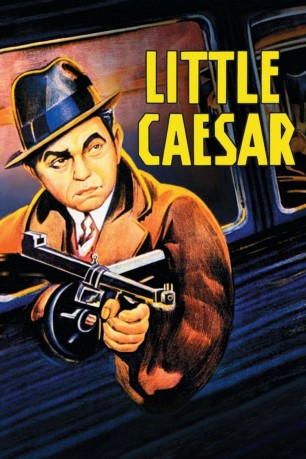
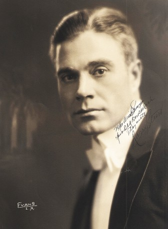

#6968 Der Kleine Caesar
Alternativ: Little Caesar
Auszeichnungen: für 1 Oscars nominiert
 
 IMDB-Wertung: 7.3 / 10
IMDB-Wertung: 7.3 / 10  Metascore: 0
Metascore: 0 
Caesar Enrico Bandello und Joe Massara wollen sich nicht damit zufriedengeben, als Kleinkriminelle ihr Geld zu verdienen. Massara strebt eine Karriere als Tänzer an. „Rico“ Bandello hingegen bleibt seinem Milieu treu, entwickelt sich zu einem rücksichtslosen Mitglied der Gang von Sam Vettori, bootet dann seinen Chef aus und ist schließlich als „Kleiner Cäsar“ auf dem Höhepunkt seiner Gangsterkarriere angekommen. Dort kann er sich so lange behaupten, bis er den Fehler begeht, Joe Massara in seine Gang aufnehmen zu wollen.
Jahr: 1931
Dauer: 78 Minuten
FSK: 12
Land: USA Studio: Warner Bros.Tonspuren:
Untertitel:
Auflösung: 1080p (1424x1080) Größe: 5939 MB
Genre: Action, Drama, Krimi, Liebe
Regisseur: Mervyn LeRoy
Drehbuch: W.R. Burnett
Soundtrack:
Darsteller:
 Edward G. Robinson als Little Caesar - Alias 'Rico'
Edward G. Robinson als Little Caesar - Alias 'Rico'- Douglas Fairbanks Jr. als Joe Massara
- Glenda Farrell als Olga Stassoff
- William Collier Jr. als Tony Passa
- Sidney Blackmer als Big Boy
- Ralph Ince als Pete Montana
- Stanley Fields als Sam Vettori
- George E. Stone als Otero
- Ernie Adams als Cashier , uncredited
- Kernan Cripps als Detective , uncredited
 Adolph Faylauer als New Year's Celebrant , uncredited
Adolph Faylauer als New Year's Celebrant , uncredited Al Hill als Rico's 'Butler' , uncredited
Al Hill als Rico's 'Butler' , uncredited- Lucille La Verne als Ma Magdalena , uncredited
- Noel Madison als Killer Peppi , uncredited
- Tom McGuire als Detective on Phone , uncredited
- Louis Natheaux als Hood , uncredited
-  Larry Steers als McClure Guest , uncredited
- Landers Stevens als Alvin McClure - Crime Commissioner , uncredited
- Thomas E. Jackson als Sgt. Flaherty
- Maurice Black als Little Arnie Lorch
- Armand Kaliz als De Voss
- Nicholas Bela als Ritz Colonna
- Elmer Ballard als Undetermined Role , uncredited
- Ferike Boros als Mrs. Passa , uncredited
- George Daly als Machine-Gunner , uncredited
- Ben Hendricks Jr. als Kid Bean , uncredited
- Gladys Lloyd als McClure Guest , uncredited
- Henry Sedley als Scabby , uncredited
- Gay Sheridan als Nightclub Patron , uncredited
- Mike Tellegen als Bodyguard , uncredited
Datei: X:\1900-1949\Kleine Caesar, Der (1931, FSK12, 1424x1080).mkv seit 15.09.2017
Festplatte: HD 1900-1970
 Es gibt insgesamt 80 Filme in der Gruppe '1900-1949'
Es gibt insgesamt 80 Filme in der Gruppe '1900-1949'